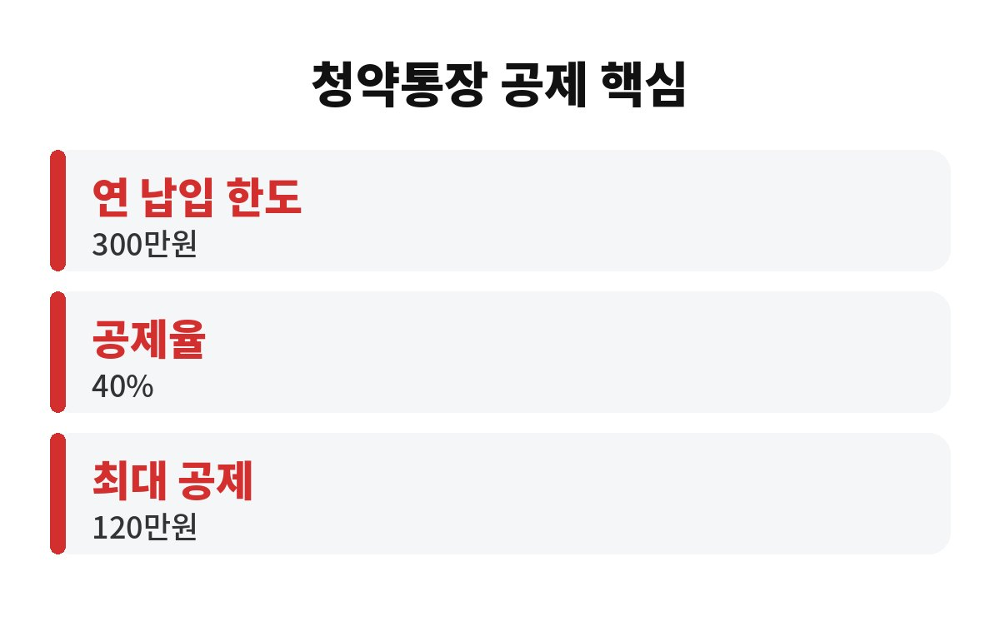

청약통장 소득공제는 연 납입액 300만 원까지의 40%, 즉 최대 120만 원이 소득에서 빠지는 제도예요. 무주택 세대주 직장인이라면 이 조건을 맞췄는지 아닌지에 따라 연말정산 환급이 갈리는데, 혹시 나는 해당될까요?
핵심은 두 숫자예요. 연간 납입 한도 300만 원, 공제율 40%. 곱하면 최대 120만 원이 과세표준에서 줄어듭니다. 120만 원이 통장에 꽂히는 게 아니라 "세금 매기는 소득"이 줄어드는 거라서, 실제로 돌려받는 돈은 내 세율에 따라 달라져요.
예를 들어 세율 15% 구간이라면 120만 원 공제로 약 18만 원 정도 세금이 줄어드는 셈입니다. 월 25만 원씩 12개월 넣으면 딱 300만 원이니까, 한 달 25만 원이 기준선이라고 기억해 두면 편해요.

청약통장 소득공제 조건은 보통 이렇게 알려져 있어요.
첫째, 총급여가 일정 기준(통상 7천만 원) 이하인 근로자여야 해요. 둘째, 무주택 세대주여야 합니다. 세대주가 아니라면 못 받는 경우가 많아서 이 부분에서 제일 많이 놓쳐요. 셋째, 대상 상품은 주택청약종합저축 같은 청약 관련 저축이에요.
"나는 부모님이랑 같이 사는데요?" 하는 분들, 세대 구성에 따라 세대주 여부가 달라지니 주민등록상 세대주인지 먼저 확인하세요. 세법은 해마다 손질되니 올해 기준은 국세청 안내로 한 번 더 보는 게 안전합니다.
공제는 그해 1월부터 12월까지 실제로 납입한 금액이 기준이에요. 연말에 몰아서 한 번에 넣는다고 인정되는 범위는 정해져 있으니, 한도(300만 원)를 채우려면 남은 달 동안 계산을 해봐야 합니다.
| 점검 항목 | 확인할 곳 |
| 무주택 세대주 여부 | 주민등록등본, 주택 보유 현황 |
| 올해 납입 합계 | 은행 앱 납입내역 |
| 납입 증명 서류 | 은행 발급 확인서, 연말정산 간소화 자료 |
올해 낸 돈이 200만 원이라면 100만 원 더 넣어서 한도를 채울지, 그냥 둘지는 환급 효과와 내 현금 사정을 같이 따져 보세요. 공제 받자고 생활비를 깎는 건 본말전도니까요.
있어요. 공제를 받은 뒤 청약통장을 중간에 해지하거나 요건이 깨지면, 그동안 받은 공제 혜택이 추징될 수 있어요. 그러니 "세금 줄이려고 넣었다가 몇 달 뒤 깨는" 건 손해일 수 있습니다.
또 직장에서 회사에 제출해야 하는 서류(무주택 확인서 등)가 따로 있는 경우가 있어요. 놓치면 간소화 자료에 있어도 공제가 안 될 수 있으니, 회사 인사팀 공지를 꼭 확인하세요.
참고로 월 25만 원이 부담스럽다면 무리하지 마세요. 월 10만 원만 넣어도 연 120만 원이 납입되고, 그 40%인 48만 원이 공제 대상이 돼요. 한도를 꽉 채우지 못해도 넣은 만큼은 공제가 되니까, "다 못 채우면 의미 없다"는 생각은 버려도 됩니다.
또 하나, 연말정산은 공제 항목끼리 서로 영향을 주지 않는 것이 아니라 총급여에 따라 전체 환급액이 정해져요. 신용카드 공제, 의료비 공제, 월세 공제와 함께 놓고 "나에게 가장 이득인 조합"을 보는 게 좋습니다. 청약통장은 그중에서도 현금 지출이 곧 내 자산(청약 가점과 통장 잔액)으로 남는다는 점이 큰 장점이에요. 쓰고 사라지는 지출이 아니라 쌓이는 돈이라는 거죠.
마지막으로 신청 방법도 간단해요. 연말정산 간소화 서비스에서 청약저축 납입 내역이 조회되는지 먼저 보고, 조회되지 않으면 가입한 은행에서 납입 확인서를 받아 회사에 내면 됩니다. 매년 1월 중순쯤 자료가 열리니, 그 전에 무주택 확인서 같은 서류가 필요한지 인사팀에 미리 물어 두면 마음이 편해요. 서류 때문에 공제를 놓치면 정말 아깝잖아요.
정리하면, 무주택 세대주이고 소득 요건에 맞는 직장인이라면 청약통장은 "내 집 마련 + 세금 절약"을 같이 챙기는 몇 안 되는 카드예요. 아직 조건을 확인 안 해봤다면 이번 주에 은행 앱부터 열어 보세요. 여러분은 올해 얼마나 넣으셨나요? 댓글로 알려 주세요.
도움이 되셨다면 구독해 주세요. 매일 생활 속 돈 이야기를 쉽게 풀어 드릴게요.
※ 본 글은 일반 정보이며 투자 권유가 아닙니다. 세법 기준은 변경될 수 있으니 국세청·세무 전문가에게 확인하세요.